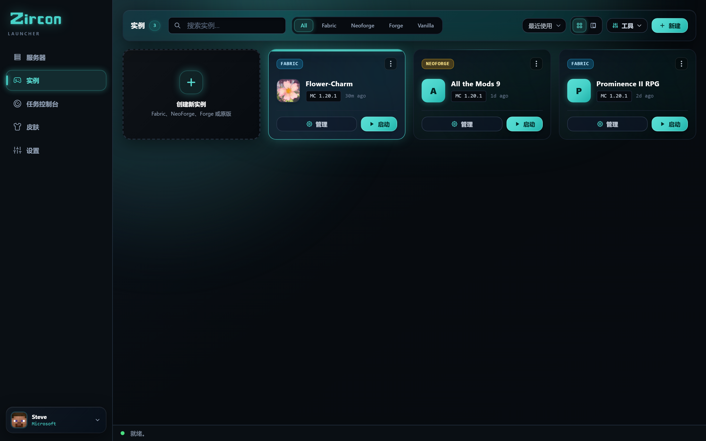
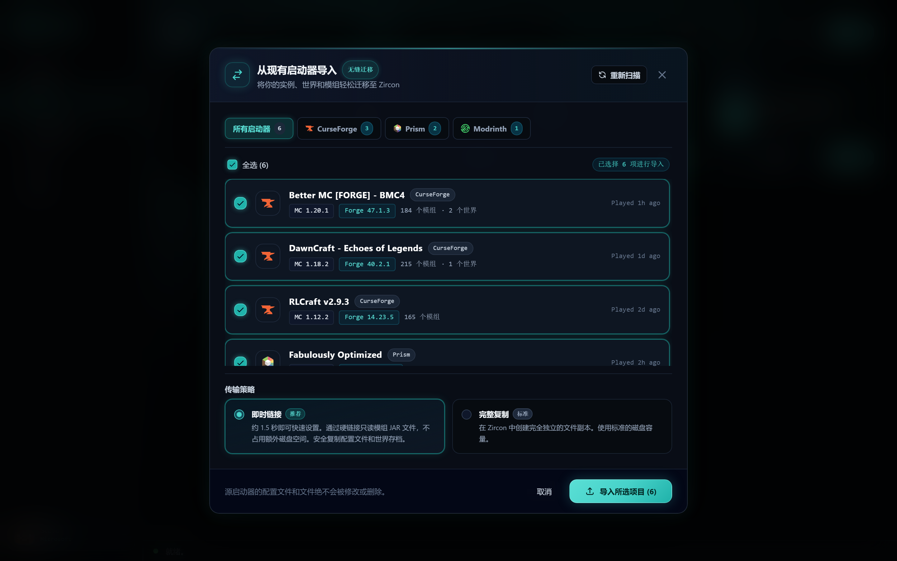
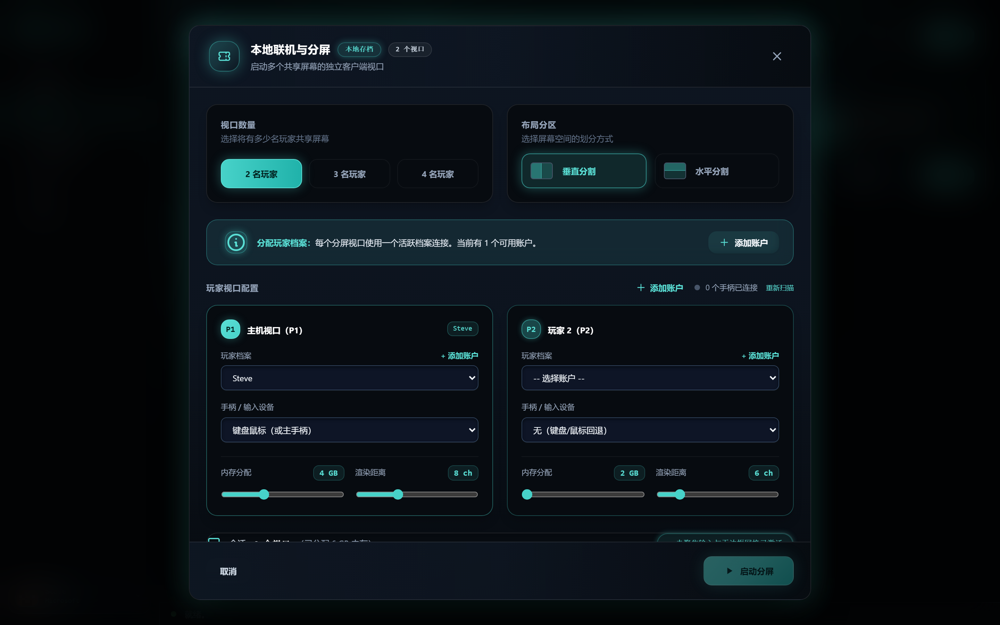
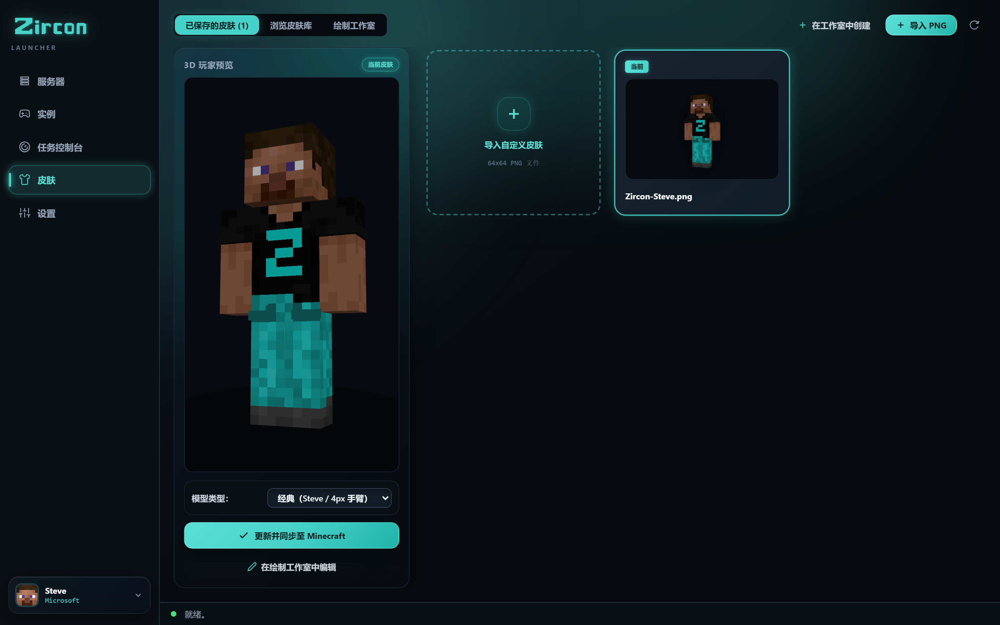

Zircon 彻底消除模组包不匹配问题。选择服务器， 点击 开始游戏，所有模组将在几秒内自动安装并通过加密验证。 此外：支持从 CurseForge & Prism 一键导入、4人沙发联机合作以及局域网自动发现。





点击上方任意标签或点击图片以全屏查看详情。
结束游戏之夜前长达两小时的 Discord 争论。只需点击“开始游戏”即可生成进入。
服务器通过端口 25565 广播其精确的材料清单 (BOM) — 包括模组 ID、版本哈希、加载器和配置文件。
启动器在毫秒级扫描你的本地实例，跳过已拥有的文件，仅标记缺失的内容。
缺失的文件直接从 Modrinth 和 CurseForge CDN 并行下载。零损坏 JAR 包，零版本不匹配。

不要丢弃你的世界、按键绑定或模组包实例。Zircon 会自动检测你安装的启动器并在不到 2 秒内无损迁移它们。
自动检测模组包、覆盖层、自定义配置和世界存档。
导入实例树、JVM 参数和世界存档。
保留 MR 包、索引文件和自定义资源包。
传输实例、自定义备份和材质包文件夹。
当你启动 Zircon 时，我们的原生 Rust 检测器会在你的系统中定位已安装的配置文件。选择你想导入的实例，Zircon 会将所有内容迁移到干净、隔离的沙盒中。
你一直希望其他启动器具备的所有功能 — 直接内置于你的桌面应用中。
通过自定义强调色、深色调色板和可配置的视图风格，打造符合个人审美的启动器。
在没有活跃互联网连接的情况下随时随地游玩。导入现有的单人世界，分配自定义 RAM，并隔离模组包。
向任何服务器实例添加你自己的可选客户端模组、着色器、资源包和键位绑定，而不会破坏同步。
Zircon 背后的自托管管理引擎。没有 Docker 麻烦，没有多端口防火墙噩梦。运行让你的玩家真正能连接的模组服务器，无需技术支持。
在模组网站上滚动寻找“正确的构建”，并希望它与朋友们运行的版本匹配。
手动将模组文件放入 mods/ 并删除那些导致启动崩溃的文件。
凌晨 1 点与朋友逐一比较配置，每次只解决一个不匹配项，而服务器却空转着。
专为那些想与朋友 游玩模组化 Minecraft 的人打造 — 而不是 花整个晚上协调模组版本和崩溃日志。
点击“开始游戏”，Zircon 会下载正确的 Minecraft 版本和模组加载器 — Fabric, Quilt, Forge, 或 NeoForge — 安装模组，并将你 直接带入游戏。
从 Modrinth 和 CurseForge 搜索并下载模组，每次启动时均通过 SHA-512 和指纹检查进行验证。无遗漏，无过期。
官方 Microsoft 登录 — 你的密码发送给 Microsoft，绝不会发送给 Zircon。无共享登录，无破解启动器，无离线变通方案。
保存的皮肤选择器，具有实时 3D 预览、官方 Mojang 云同步，以及通过 API 拉取热门皮肤的内置社区皮肤浏览器。
服务器可以提供自己的着色器和资源包。Zircon 在你加入时应用 它们 — 你只需同意一次，然后就完成了。
创建离线单人实例，拥有各自的模组、着色器和 材质包。无需服务器 — 只需安静地建造。
在你的浏览器中一键操作。Zircon 使用官方 Microsoft 流程 — 你的密码永远不会触及该应用。
你保存的服务器，最近游玩的排在最前 — 还有推荐。 每个服务器都自带其模组列表。
Zircon 从 Modrinth & CurseForge 同步并验证模组，如果服务器处于休眠状态则将其唤醒， 并连接你。你生成进入 — 完全模组化，准备就绪。
没有缓慢的 Electron 运行时在你玩游戏时吞噬数 GB 的背景内存。Zircon 的核心桌面引擎完全用编译后的 Rust 编写，以实现瞬时启动、亚毫秒级哈希验证和超轻量系统占用。
关于如何开始使用 Zircon 你需要知道的一切。
当你加入服务器并点击 开始游戏 时，Zircon 会将服务器发布的材料清单与你的本地客户端文件夹进行比较。任何缺失或更新的模组将通过 Modrinth & CurseForge SHA-512 哈希和指纹进行验证，然后并行即时下载，无需手动拖拽文件。
是的！Zircon 包含一个原生的 1 键通用迁移工具。它会自动检测来自 CurseForge、Prism Launcher、Modrinth App 和 ATLauncher 的安装目录，让你在不到两秒内导入完整的实例树、存档、按键绑定和模组配置。
Zircon 允许你连接多达 4 个手柄（Xbox、PlayStation 或通用蓝牙控制器），并启动多个隔离的游戏窗口，在你的显示器或电视上排列成无缝的分屏网格。每位玩家用自己的手柄控制自己的角色。
是的！Zircon 原生支持直接从 Modrinth 和 CurseForge 搜索、安装和同步模组，无需任何 API 密钥配置。两个仓库开箱即用，完全集成。
是的，Zircon 根据商业源代码许可证 1.1 (BSL 1.1) 提供源代码。客户端启动器和自托管服务器管理器对玩家、家庭实验室爱好者和游戏网络均 100% 免费。整个代码库在 GitHub 上公开供检查、自托管和社区贡献。
是的。认证通过标准 Microsoft OAuth 2.0 PKCE 在你的默认系统浏览器中进行。你的登录凭据直接发送到 Microsoft 的登录服务器，Zircon 绝不会访问、处理或存储它们。
Zircon 原生支持 Fabric, Quilt, Forge, 和 NeoForge。当你启动实例或加入服务器时，启动器会自动安装所需的模组加载器版本和经过验证的 Adoptium Temurin Java 运行时。